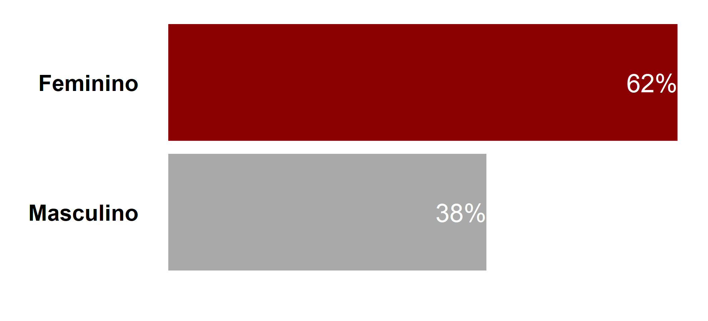
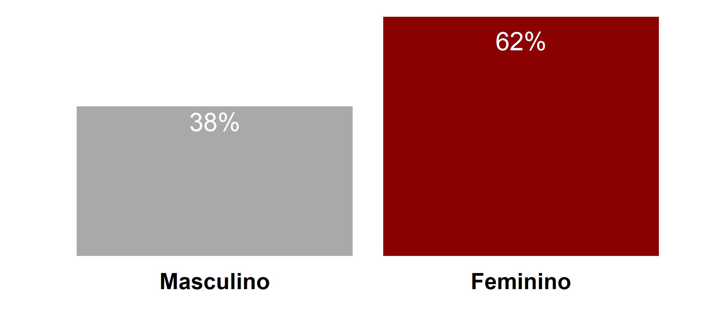
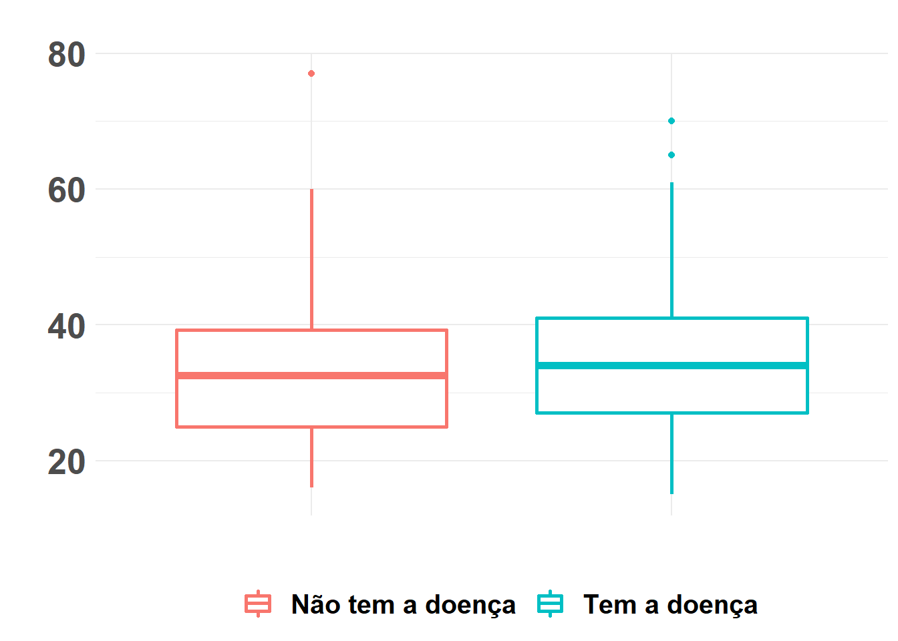
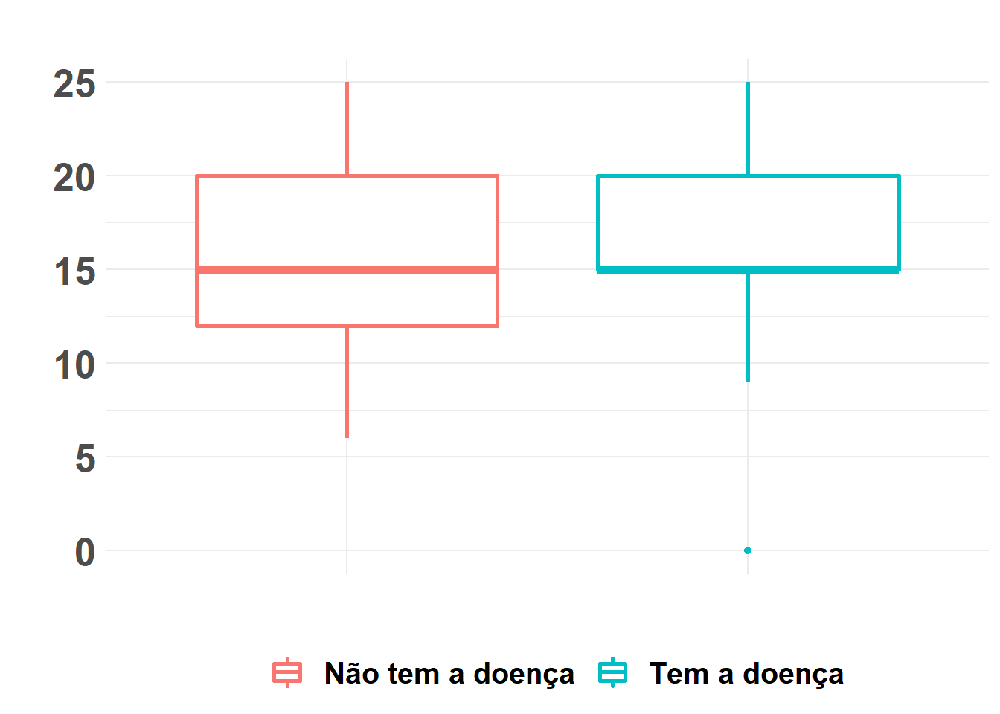
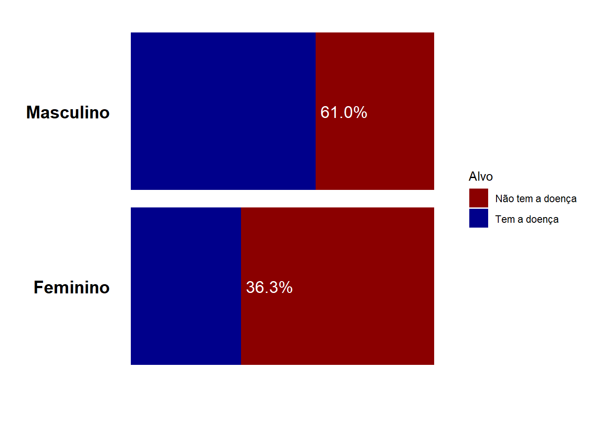
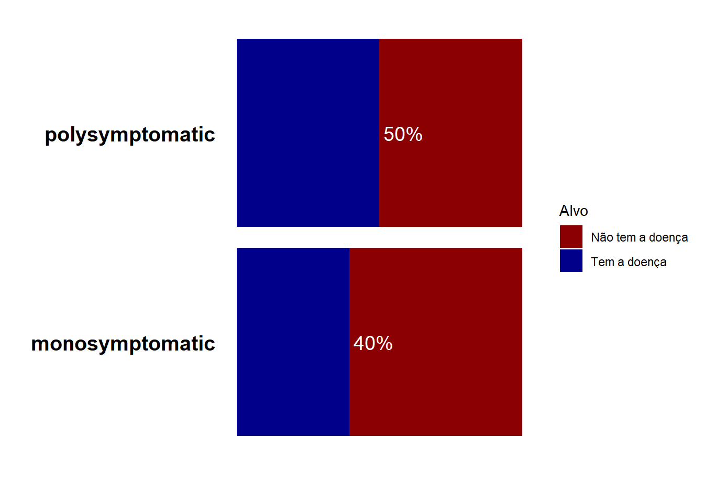

### Carregando as bibliotecas
library(readr) # leitura de dados em csv
library(dplyr) # manipulacao de dados
library(magrittr) # manipulacao de dados
library(ggplot2) # visualizacao dos dados
library(plotly) # visualizacao dos dados
library(skimr)Análise Exploratória
Análise exploratória dos dados
Esse material tem como objetivo, introduzir algumas análises iniciais que precisamos fazer quando estamos com os nossos dados ‘em mãos’.
Banco de dados
Estudo de coorte prospectivo foi realizado em pacientes mexicanos recém-diagnosticados com CIS que se apresentaram no Instituto Nacional de Neurologia e Neurocirurgia (NINN) na Cidade do México, México, entre 2006 e 2010.
Citation:
Pineda, Benjamin; Flores Rivera, Jose De Jesus (2023), “Conversion predictors of Clinically Isolated Syndrome to Multiple Sclerosis in Mexican patients: a prospective study.”, Mendeley Data, V1, doi: 10.17632/8wk5hjx7x2.1
License:
CC BY 4.0
Dataset column descriptions
ID: Patient identifier (int)
Age: Age of the patient (in years)
Schooling: time the patient spent in school (in years)
Gender: 1=male, 2=female
Breastfeeding: 1=yes, 2=no, 3=unknown
Varicella: 1=positive, 2=negative, 3=unknown
Initial_Symptoms: 1=visual, 2=sensory, 3=motor, 4=other, 5= visual and sensory, 6=visual and motor, 7=visual and others, 8=sensory and motor, 9=sensory and other, 10=motor and other, 11=Visual, sensory and motor, 12=visual, sensory and other, 13=Visual, motor and other, 14=Sensory, motor and other, 15=visual,sensory,motor and other
Mono _or_Polysymptomatic: 1=monosymptomatic, 2=polysymptomatic, 3=unknown
Oligoclonal_Bands: 0=negative, 1=positive, 2=unknown
LLSSEP: 0=negative, 1=positive
ULSSEP:0=negative, 1=positive
VEP:0=negative, 1=positive
BAEP: 0=negative, 1=positive
Periventricular_MRI:0=negative, 1=positive
Cortical_MRI: 0=negative, 1=positive
Infratentorial_MRI:0=negative, 1=positive
Spinal_Cord_MRI: 0=negative, 1=positive
initial_EDSS:?
final_EDSS:?
Group: 1=CDMS, 2=non-CDMS
Carregando nosso dataset
## Carregando os dados
df = read.csv( file = 'C:\\Users\\pedro\\Documents\\github\\ESTATISTICA_NAO_PARAMETRICA\\CodigosR\\conversion_predictors_of_clinically_isolated_syndrome_to_multiple_sclerosis.csv' )
## Visualizando os tipos das variaveis
glimpse(df)Rows: 273
Columns: 20
$ X <int> 0, 1, 2, 3, 4, 5, 6, 7, 8, 9, 10, 11, 12, 13, ~
$ Gender <int> 1, 1, 1, 2, 2, 1, 2, 2, 1, 2, 2, 2, 1, 1, 2, 1~
$ Age <int> 34, 61, 22, 41, 34, 29, 53, 24, 36, 28, 60, 25~
$ Schooling <int> 20, 25, 20, 15, 20, 22, 20, 15, 15, 20, 12, 20~
$ Breastfeeding <int> 1, 3, 3, 1, 2, 1, 1, 1, 1, 1, 3, 1, 1, 1, 1, 1~
$ Varicella <int> 1, 2, 1, 1, 1, 1, 1, 1, 1, 1, 2, 1, 1, 1, 1, 2~
$ Initial_Symptom <int> 2, 10, 3, 7, 6, 6, 14, 14, 8, 8, 15, 5, 11, 13~
$ Mono_or_Polysymptomatic <int> 1, 2, 1, 2, 2, 2, 2, 2, 2, 2, 2, 2, 2, 2, 1, 2~
$ Oligoclonal_Bands <int> 0, 1, 1, 1, 0, 0, 0, 0, 0, 0, 0, 0, 0, 1, 0, 0~
$ LLSSEP <int> 1, 1, 0, 0, 1, 1, 1, 1, 1, 0, 1, 1, 1, 0, 1, 1~
$ ULSSEP <int> 1, 0, 0, 1, 0, 0, 0, 1, 1, 0, 0, 0, 1, 0, 1, 1~
$ VEP <int> 0, 1, 0, 1, 0, 0, 1, 0, 1, 0, 0, 1, 1, 0, 1, 1~
$ BAEP <int> 0, 0, 0, 0, 0, 0, 0, 0, 0, 0, 0, 0, 0, 0, 0, 0~
$ Periventricular_MRI <int> 0, 0, 0, 1, 1, 1, 1, 1, 1, 1, 1, 0, 1, 1, 1, 0~
$ Cortical_MRI <int> 1, 0, 1, 1, 0, 0, 1, 1, 0, 0, 0, 1, 1, 0, 1, 1~
$ Infratentorial_MRI <int> 0, 0, 0, 0, 0, 1, 0, 1, 0, 1, 0, 0, 1, 1, 1, 0~
$ Spinal_Cord_MRI <int> 1, 1, 0, 0, 0, 0, 1, 1, 0, 0, 1, 1, 0, 0, 1, 0~
$ Initial_EDSS <int> 1, 2, 1, 1, 1, 1, 1, 2, 1, 1, 1, 1, 2, 1, 2, 1~
$ Final_EDSS <int> 1, 2, 1, 1, 1, 1, 1, 2, 1, 1, 1, 1, 2, 1, 2, 1~
$ group <int> 1, 1, 1, 1, 1, 1, 1, 1, 1, 1, 1, 1, 1, 1, 1, 1~Primeira análise do dataset
Verificação de missing e formato das variáveis
df %>%
skim() %>%
reactable::reactable()Podemos ver que apesar de todas as variáveis estarem como numéricas, algumas delas não são numéricas de fato. Como por exemplo, Gender igual a 1 significa que o paciente é homem, se for igual a 2, a paciente é mulher. Dessa forma, é importante analisar variável por variável e saber o que cada código significa.
Alterando os Tipos das variáveis
df = df %>% mutate(Gender = as.factor(Gender) )
df = df %>% mutate(Breastfeeding = as.factor(Breastfeeding) )
df = df %>% mutate(Varicella = as.factor(Varicella) )
df = df %>% mutate(Initial_Symptom = as.factor(Initial_Symptom))
df = df %>% mutate(group = as.factor(group)) Análise Univariada
Gênero
library(tidyr)
library(ggplot2)
library(reshape2)
library(scales)
library(tidyverse)
df_fig = df %>% mutate(Gender = case_when(
Gender == 1 ~ 'Masculino',
Gender == 2 ~ 'Feminino' )
) %>%
group_by(Gender) %>%
summarize(freq = n()) %>%
mutate(pct = round(freq/sum(freq), 4 ) ) %>% # criando variavel da porcentagem chamada pct
mutate(categoria = Gender) # criando a variavel categoria para deixar generico no grafico
fig1 = ggplot(df_fig, aes(fct_reorder(categoria, freq, .desc = F), pct, fill = categoria)) +
geom_bar(stat='identity') +
geom_text(aes(label= scales::percent(pct) ), position = position_stack(vjust = 1), hjust = c(1),size = 10, color = 'white')+
# geom_text(aes(label= scales::percent(pct) ), vjust = 'bottom', hjust = 'bottom', size = 5)+
#scale_y_continuous(labels = scales::percent())+
coord_flip() +
theme_linedraw()+
labs(x="", y="", alpha = "", fill = "", colour = "") +
theme(legend.position = "none") + # Remove all legends from plot
scale_fill_manual( values = c("darkred", "darkgray" ) )+
scale_y_continuous(labels=scales::percent_format() )+
theme(axis.text=element_text(size=25,face="bold"),axis.title=element_text(size=25,face="bold"),
legend.text=element_blank(),
legend.title=element_blank() )+
theme(axis.text.x=element_blank(),
axis.ticks=element_blank(),panel.border=element_blank(),panel.grid.major=element_blank(),
panel.grid.minor=element_blank());
fig2 = ggplot(df_fig, aes(fct_reorder(categoria, freq, .desc = F), pct, fill = categoria)) +
geom_bar(stat='identity') +
geom_text(aes(label= scales::percent(pct) ), position = position_stack(vjust = 0.9), hjust = c(0.5),size = 10, color = 'white')+
# geom_text(aes(label= scales::percent(pct) ), vjust = 'bottom', hjust = 'bottom', size = 5)+
#scale_y_continuous(labels = scales::percent())+
#coord_flip() +
theme_linedraw()+
labs(x="", y="", alpha = "", fill = "", colour = "") +
theme(legend.position = "none") + # Remove all legends from plot
scale_fill_manual( values = c("darkred", "darkgray" ) )+
scale_y_continuous(labels=scales::percent_format() )+
theme(axis.text=element_text(size=25,face="bold"),axis.title=element_text(size=25,face="bold"),
legend.text=element_blank(),
legend.title=element_blank() )+
theme(axis.text.y=element_blank(),
axis.ticks=element_blank(),panel.border=element_blank(),panel.grid.major=element_blank(),
panel.grid.minor=element_blank());
fig1
fig2
Análise bivariada
Tabelas
df %>%
gtsummary::tbl_cross(row = group, col = Gender, percent = "cell")| Gender | Total | ||
|---|---|---|---|
| 1 | 2 | ||
| group | |||
| 1 | 64 (23%) | 61 (22%) | 125 (46%) |
| 2 | 41 (15%) | 107 (39%) | 148 (54%) |
| Total | 105 (38%) | 168 (62%) | 273 (100%) |
Gráficos
Age
df = df %>% mutate(group = case_when(
group == 1 ~ 'Tem a doença',
group == 2 ~ 'Não tem a doença' ))
ggplot(df, aes(x = group, y = Age, colour = group) ) +
ggtitle('') +
theme_minimal()+
labs(x="", y="", alpha = "", fill = "", colour = "") + theme(legend.position = "bottom") +
geom_boxplot(size = 1) +
theme(axis.text=element_text(size=20, face = 'bold'),
axis.title=element_text(size=20,face="bold"),
plot.title = element_text(size = 20, face = "bold"),
legend.title=element_text(size=20, face = 'bold'),
axis.text.x=element_blank(),
legend.text=element_text(size=15, face = 'bold') )
Anos de escolaridade
ggplot(df, aes(x = group, y = Schooling, colour = group) ) +
ggtitle('') +
theme_minimal()+
labs(x="", y="", alpha = "", fill = "", colour = "") + theme(legend.position = "bottom") +
geom_boxplot(size = 1) +
theme(axis.text=element_text(size=20, face = 'bold'),
axis.title=element_text(size=20,face="bold"),
plot.title = element_text(size = 20, face = "bold"),
legend.title=element_text(size=20, face = 'bold'),
axis.text.x=element_blank(),
legend.text=element_text(size=15, face = 'bold') )
Variáveis qualitativas
Alvo x Genero
### ALVO x GENERO ----
df_fig = df %>% mutate(Gender = case_when(
Gender == 1 ~ 'Masculino',
Gender == 2 ~ 'Feminino' )
) %>%
group_by(Gender, group) %>%
summarize(freq = n()) %>%
mutate(pct = round(freq/sum(freq), 4 ) ) %>% # criando variavel da porcentagem chamada pct
mutate(categoria = Gender) # criando a variavel categoria para deixar generico no grafico
ggplot( df_fig, aes(categoria, pct, fill = group) ) +
geom_bar(stat='identity') +
geom_text(aes(label= scales::percent(pct) ), position = position_stack(vjust = 1), hjust = c(-0.1), size = 5, col = 'white')+
#scale_y_continuous(labels = scales::percent())+
coord_flip() +
theme_linedraw()+
labs(x="", y="", alpha = "", fill = "Alvo", colour = "") +
scale_fill_manual( values = c( "darkred", "darkblue" ) ) +
#theme(legend.position = "none") + # Remove all legends from plot
theme(axis.text=element_text(size=15,face="bold"),axis.title=element_text(size=15,face="bold")
#,legend.text=element_blank(), legend.title=element_blank()
)+
theme(axis.text.x=element_blank(),
axis.ticks=element_blank(),panel.border=element_blank(),panel.grid.major=element_blank(),
panel.grid.minor=element_blank())
Alvo x Mono_or_Polysymptomatic
### ALVO x mono_or_poly....----
df_fig = df %>% filter(Mono_or_Polysymptomatic != 3) %>% mutate(Mono_or_Polysymptomatic = case_when(
Mono_or_Polysymptomatic == 1 ~ 'monosymptomatic',
Mono_or_Polysymptomatic == 2 ~ 'polysymptomatic')
) %>%
group_by( Mono_or_Polysymptomatic, group) %>%
summarize(freq = n()) %>%
mutate(pct = round(freq/sum(freq), 4 ) ) %>% # criando variavel da porcentagem chamada pct
mutate(categoria = Mono_or_Polysymptomatic) # criando a variavel categoria para deixar generico no grafico
df_fig# A tibble: 4 x 5
# Groups: Mono_or_Polysymptomatic [2]
Mono_or_Polysymptomatic group freq pct categoria
<chr> <chr> <int> <dbl> <chr>
1 monosymptomatic Não tem a doença 49 0.605 monosymptomatic
2 monosymptomatic Tem a doença 32 0.395 monosymptomatic
3 polysymptomatic Não tem a doença 93 0.5 polysymptomatic
4 polysymptomatic Tem a doença 93 0.5 polysymptomaticggplot( df_fig, aes(categoria, pct, fill = group) ) +
geom_bar(stat='identity') +
geom_text(aes(label= scales::percent(pct) ), position = position_stack(vjust = 1), hjust = c(-0.1), size = 5, col = 'white')+
#scale_y_continuous(labels = scales::percent())+
coord_flip() +
theme_linedraw()+
labs(x="", y="", alpha = "", fill = "Alvo", colour = "") +
scale_fill_manual( values = c( "darkred", "darkblue" ) ) +
#theme(legend.position = "none") + # Remove all legends from plot
theme(axis.text=element_text(size=15,face="bold"),axis.title=element_text(size=15,face="bold")
#,legend.text=element_blank(), legend.title=element_blank()
)+
theme(axis.text.x=element_blank(),
axis.ticks=element_blank(),panel.border=element_blank(),panel.grid.major=element_blank(),
panel.grid.minor=element_blank())
Testes de hipóteses
Mann Whitney ou teste t
Testar as suposições para o teste paramétrico (teste t)
As suposições do teste t são: Normalidade nos dados e variância constante entre os grupos.
# Teste Wilcoxon-Mann-Whitney
shapiro.test(df$Age[df$group == 'Tem a doença'] ) # não normal
Shapiro-Wilk normality test
data: df$Age[df$group == "Tem a doença"]
W = 0.9634, p-value = 0.001841shapiro.test(df$Age[df$group == 'Não tem a doença'] ) # não normal
Shapiro-Wilk normality test
data: df$Age[df$group == "Não tem a doença"]
W = 0.96268, p-value = 0.0004826var.test(df$Age[df$group == 'Tem a doença'],df$Age[df$group == 'Não tem a doença']) # Variancias homogenias
F test to compare two variances
data: df$Age[df$group == "Tem a doença"] and df$Age[df$group == "Não tem a doença"]
F = 1.108, num df = 124, denom df = 147, p-value = 0.5491
alternative hypothesis: true ratio of variances is not equal to 1
95 percent confidence interval:
0.7910385 1.5595845
sample estimates:
ratio of variances
1.107971 Para ambos os grupos a idade não tem distribuição normal. Sendo assim, como a suposição de normalidade não é válida, então temos que usar um teste não paramétrico. Como temos duas populações, vamos usar o teste de Mann-Whitney.
wilcox.test(df$Age~df$group) # as medianas nao sao diferentes
Wilcoxon rank sum test with continuity correction
data: df$Age by df$group
W = 8665.5, p-value = 0.3686
alternative hypothesis: true location shift is not equal to 0Teste Qui-Quadrado
O teste Qui-quadrado pode ser usado para medir associação entre duas variáveis qualitativas.
chisq.test(df$Gender, df$group, correct = T)
Pearson's Chi-squared test with Yates' continuity correction
data: df$Gender and df$group
X-squared = 14.831, df = 1, p-value = 0.0001176Dessa forma, como o p-valor é menor que o nível de significância (\(\alpha = 0.05\)), então rejeitamos a hipóteses de que as frequências são iguais para as duas populações.
Mono ou Polysymptomatic
df = df %>% filter(Mono_or_Polysymptomatic != 3)
qui2 = chisq.test(df$Mono_or_Polysymptomatic, df$group, correct = T)
qui2$expected df$group
df$Mono_or_Polysymptomatic Não tem a doença Tem a doença
1 43.07865 37.92135
2 98.92135 87.07865